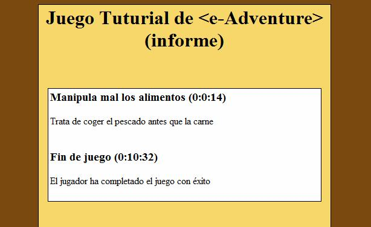

Reglas de evaluación
Para editar una regla, debemos seleccionarla de la lista de reglas (o
crearla en caso de que no haya ninguna, más
información sobre como añadir elementos). Una regla de
evaluación consta de los siguientes campos que pueden ser editados:
-
Importancia: Por defecto tomará el valor Normal.
Admite los siguientes valores: Muy baja, baja, normal, alta y muy
alta. Cuando una evaluación es generada manualmente por el
estudiante (usando la opción apropiada en el menú de juego), podrá
elegir su importancia. Así sólo recibirá la evaluación de las
cuestiones que considere relevantes.
-
Concepto: Descripción breve del concepto que trata de evaluar
la regla.
-
Condiciones: Indica las condiciones que deben cumplirse para
que se ejecute la regla. Pueden usarse estas condiciones para provocar
una evaluación del estudiante cuando se lleva a cabo una determinada
acción gracias al lanzamiento de efectos que activen o desactiven los
flags de los que depende la condición. Por ejemplo, activar un flag
cuando el estudiante realiza demasiados intentos para lograr algo, y
mediante una regla de evaluación que dependa de este flag reducir una
variable de nota global del alumno. (Más
información sobre condiciones )
-
Texto: Texto que debe ser impreso en el informe de evaluación
que se genera de forma automática.
-
Propiedades: Cada propiedad es un par de la forma (variable,
valor). Cuando las condiciones se satisfacen, a cada variable se le
asigna el valor indicado. Pueden usarse para añadir o quitar notas
parciales, o para evaluar al alumno con una nota global. Estas
propiedades no saldrán reflejadas en el informe, sino que están
pensadas para ser enviadas a un servidor de aprendizaje que recoja la
evaluación del alumno y la incluya en su expediente. Si se seleccionó
la opción de perfil SCORM 1.2 o 2004, en el campo "Id" aparecerá una
lista con las partes del modelo de datos de SCORM a las que podemos
acceder. (más info en Tipo
de perfil )
Reglas de evaluación temporizadas
Estas reglas disparan un temporizador cuando se satisfacen las
condiciones iniciales, y se para cuando se cumplen las condiciones
finales. En ese momento se toma el tiempo transcurrido y se procede a
evaluar al alumno según el rango de tiempo(s) en el que se encuentre.

De esta manera pueden definirse múltiples parejas de texto y propiedades
para diferentes rangos de tiempo (efectos). Así, si el tiempo
transcurrido pertenece a un rango se asignaran valores a una serie de
variables y se mostrará una línea de texto en el informe de manera
distinta a si el tiempo pertenece a otro rango. Si el tiempo
transcurrido no pertenece a ninguno de los rangos la regla no tiene
ningún efecto. Si por el contrario dicho tiempo pertenece a dos
intervalos simultáneamente se lanzará el efecto correspondiente al
primero de ellos.
Por último, remarcar que con los resultados de las diferentes reglas de
evaluación se puede, como ya se ha dicho previamente, generar un informe
en XML (dirigido a un Servidor de Aprendizaje) o un informe HTML
(dirigido al instructor de la materia) como éste:
